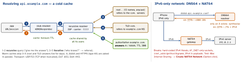

networking · folio
In one line: DNS maps a name to records through a hierarchy: your device’s stub resolver asks a recursive resolver, which walks root → TLD → authoritative and caches every answer for its TTL. Classic DNS is plaintext UDP/53; encrypted DNS (DoT/DoH) hides it, DNSSEC authenticates it. On iOS the app must work on IPv6-only networks (NAT64/DNS64) — App Review tests it.
Download PDF Print view LaTeX source


Records you should know
A/AAAA | IPv4 / IPv6 address |
CNAME | alias to another name; nothing else may sit beside it ⇒ not at the zone apex |
NS/SOA | who is authoritative / zone serial + negative-cache TTL |
MX | mail servers with priority |
TXT | free text: SPF, DKIM, domain-ownership proofs |
SRV | _svc._proto.name: priority, weight, port, target (RFC 2782) — XMPP, SIP |
HTTPS/SVCB | RFC 9460, types 65/64: alpn (h3!), port, IP hints, ECH config; AliasMode works at the apex. iOS 14+ asks for it |
CAA | which CAs may issue certificates |
PTR | reverse: IP → name |
Caching and TTLs
- Layers: authoritative → recursive resolver cache → home router / forwarder → OS cache (
mDNSResponder) → (never) your app. Each keeps a record for its TTL, counting down from when it fetched it. - Negative caching (RFC 2308):
NXDOMAIN/no-data is cached for min(SOA TTL, SOAMINIMUM). Querying a name before creating it keeps it “missing” for that long. - Migration: lower the TTL a full old-TTL before moving; resolvers that ignore TTLs, and apps that cache IPs, still hit the old address — keep it up for a while.
- Encrypted DNS: DoT (RFC 7858, TCP :853), DoH (RFC 8484, HTTPS :443), DoQ (RFC 9250). DNSSEC signs records: authenticity, not privacy.
- Split-horizon: the same name answers differently inside a VPN / office / home LAN. VPN profiles scope DNS with match domains (
NEDNSSettings.matchDomains). - Happy Eyeballs v2 (RFC 8305): AAAA first, A right after; waits 50 ms for AAAA if A wins, then races IPv6 vs IPv4 connects 250 ms apart. Built into URLSession + Network.framework.
Apple APIs
- System-wide:
NEDNSSettingsManager(iOS 14) installs a DoH/DoT config (NEDNSOverHTTPSSettings,onDemandRules); the user must enable it in Settings. - Per app:
NWParameters.PrivacyContext(iOS 14) —requireEncryptedNameResolution; on.defaultit covers the process (URLSession,getaddrinfo). iOS 16: DDR auto-upgrades to the network’s encrypted resolver. - DNSSEC:
URLRequest.requiresDNSSECValidation(iOS 16.1) — lookup fails if validation fails. Custom records (SRV, TXT):DNSServiceQueryRecord(dns_sd.h). - Local names (
.local, Bonjour): Local Network permission (iOS 14):NSLocalNetworkUsageDescription+NSBonjourServices. - Debug from a Mac:
dig api.example.com AAAA +short,dig +trace(walks the chain above),dig @1.1.1.1 …(compare resolvers); on device:URLSessionTaskMetricsdomainLookup*dates anddomainResolutionProtocol(udp / tcp / tls / https).
Example — a zone, and encrypted DNS for one app
api.example.com. 300 IN A 192.0.2.10
api.example.com. 300 IN AAAA 2001:db8::10
www.example.com. 3600 IN CNAME cdn.example.net.
example.com. 3600 IN HTTPS 1 . alpn="h3,h2" ipv4hint=192.0.2.10
_sip._tcp.example.com. 86400 IN SRV 10 60 5060 sip.example.com.
example.com. 3600 IN MX 10 mail.example.com.
example.com. 3600 IN CAA 0 issue "ca.example.net"import Network
NWParameters.PrivacyContext.default.requireEncryptedNameResolution(
true, fallbackResolver: .https(
URL(string: "https://dns.example.net/dns-query")!,
serverAddresses: [.hostPort(host: "192.0.2.53", port: 443)]))
// every later URLSession / NWConnection lookup: DoH (or system DoH)DNS failures on mobile
| symptom | usual cause |
|---|---|
-1003 cannot find host | NXDOMAIN, typo, split-horizon name outside the VPN |
-1006 DNS lookup failed | resolver unreachable, captive portal, blocked DoH |
| slow first request only | cold cache, slow carrier / Wi-Fi resolver |
| works on Wi-Fi, fails on LTE | IPv6-only carrier + IPv4 literal (NAT64) |
| old server after migration | high TTL, or the app cached the IP |
.local device not found | Local Network permission denied |
Traps
- “My app is IPv6-ready because the server has AAAA” — App Review runs on NAT64: the server can stay IPv4; your client must avoid IPv4 literals and v4-only APIs.
- Resolving yourself and connecting to an IP: breaks Happy Eyeballs, TLS SNI/hostname checks, CDN routing and NAT64. Connect by name.
- Caching IPs in the app or pinning one address — the TTL was the contract.
- DNSSEC ≠ encryption; DoH ≠ authenticity of the zone.
- Pre-creating a name after querying it: negative caching keeps it NXDOMAIN.